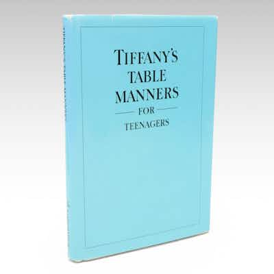

PASSIllustrated "Tiffany's Table Manners for Teenagers" by Walter Hoving, 1989
Tiffany's Table Manners for Teenagers by Walter Hoving, illustrated by Joe Eula, Random Ho
14h left
Current bid$27 · 13 bids
Est. value$28
Your max bid$0
Margin at bid−$38
Details & price history →